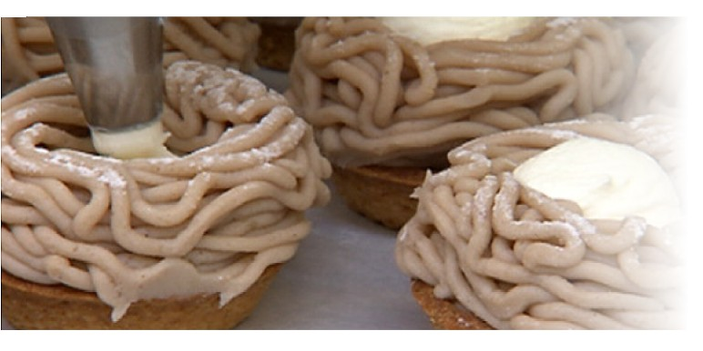

Geröstete Maroni
Maroni einschneiden und entweder:
30 min auf dem Feuer oder in einer Bratpfanne auf dem Herd braten (alle 5 min wenden)
30 min bei 200°C im Backofen backen (wenig Wasser aufs Blech geben)
